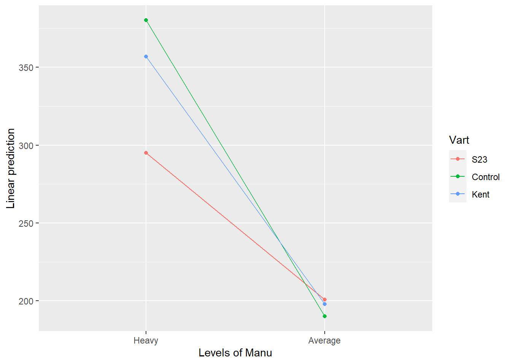
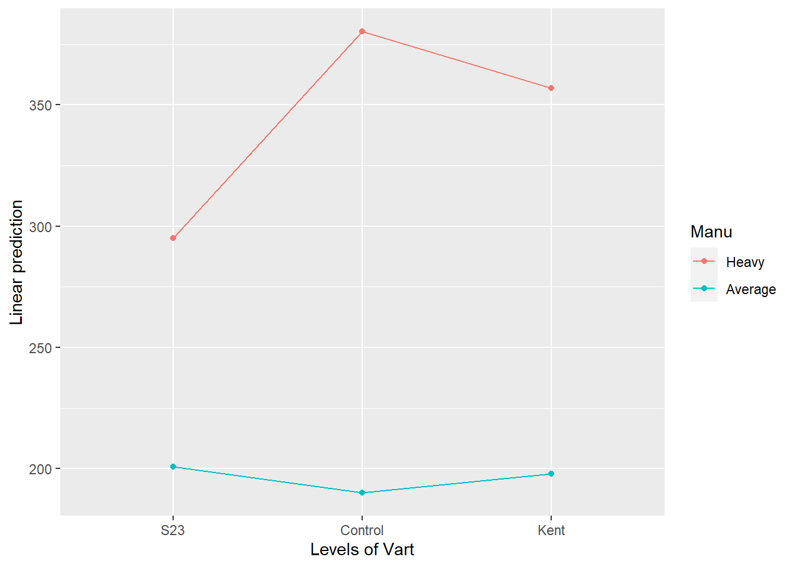

15 Factorial Experiment under RCBD
Definition
- Used when experimental material is heterogenous in one direction and treatments are factorial in nature
Example
Three strains of perennial ryegrass were grown as swards at each of the fertilizer levels. The three strains were S23, Kent & a control. The fertilizer levels were heavy & average. The experiment was laid out under randomized complete block design. The mid summer dry matter yields, in units of 10 lb/acre were as follows. Analyze the data & construct a table of means with appropriate standard errors. Draw any graphs you deem fit to explain the results & write a short report on the conclusions to be drawn from this experiment.
DMY Blk Vart Manu
1 299 I S23 Heavy
2 318 II S23 Heavy
3 284 III S23 Heavy
4 279 IV S23 Heavy
5 247 I S23 Average
6 202 II S23 Average
7 171 III S23 Average
8 183 IV S23 Average
9 403 I Control Heavy
10 439 II Control Heavy
11 355 III Control Heavy
12 324 IV Control Heavy
13 222 I Control Average
14 170 II Control Average
15 192 III Control Average
16 176 IV Control Average
17 382 I Kent Heavy
18 353 II Kent Heavy
19 383 III Kent Heavy
20 310 IV Kent Heavy
21 233 I Kent Average
22 216 II Kent Average
23 200 III Kent Average
24 143 IV Kent AverageDMY <-
c(
299, 318, 284, 279,
247, 202, 171, 183,
403, 439, 355, 324,
222, 170, 192, 176,
382, 353, 383, 310,
233, 216, 200, 143
)
Blk <- gl(n = 4, k = 1, length = 24, labels = c("I", "II", "III", "IV"))
Vart <- gl(n = 3, k = 8, length = 24, labels = c("S23", "Control", "Kent"))
Manu <- gl(n = 2, k = 4, length = 24, labels = c("Heavy", "Average"))
FSRCBD.df <- data.frame(DMY, Blk, Vart, Manu)
FSRCBD.dfAnalysis of Variance Table
Response: DMY
Df Sum Sq Mean Sq F value Pr(>F)
Blk 3 12814 4271 7.1611 0.003294 **
Vart 2 6196 3098 5.1935 0.019324 *
Manu 1 131128 131128 219.8375 0.0000000002287 ***
Vart:Manu 2 9590 4795 8.0389 0.004239 **
Residuals 15 8947 596
---
Signif. codes: 0 '***' 0.001 '**' 0.01 '*' 0.05 '.' 0.1 ' ' 1FSRCBD.fm1 <- lm(formula = DMY ~ Blk + Vart * Manu, data = FSRCBD.df)
anova(FSRCBD.fm1) Analysis of Variance Table (Type III SS)
Model: DMY ~ Blk + Vart * Manu
SS df MS F PRE p
--------- --------------- | ---------- -- --------- ------ ----- -----
Model (error reduced) | 159728.167 8 19966.021 33.473 .9470 .0000
Blk | 12814.333 3 4271.444 7.161 .5889 .0033
Vart | 15536.167 2 7768.083 13.023 .6346 .0005
Manu | 17766.125 1 17766.125 29.785 .6651 .0001
Vart:Manu | 9590.083 2 4795.042 8.039 .5173 .0042
Error (from model) | 8947.167 15 596.478
--------- --------------- | ---------- -- --------- ------ ----- -----
Total (empty model) | 168675.333 23 7333.710 supernova(FSRCBD.fm1)
emmip(FSRCBD.fm1, Vart ~ Manu)
emmip(FSRCBD.fm1, Manu ~ Vart) Vart emmean SE df lower.CL upper.CL
S23 248 8.63 15 229 266
Control 285 8.63 15 267 304
Kent 278 8.63 15 259 296
Results are averaged over the levels of: Blk, Manu
Confidence level used: 0.95 emmeans(FSRCBD.fm1, ~ Vart) Manu emmean SE df lower.CL upper.CL
Heavy 344 7.05 15 329 359
Average 196 7.05 15 181 211
Results are averaged over the levels of: Blk, Vart
Confidence level used: 0.95 emmeans(FSRCBD.fm1, ~ Manu)Vart = S23:
Manu emmean SE df lower.CL upper.CL
Heavy 295 12.2 15 269 321
Average 201 12.2 15 175 227
Vart = Control:
Manu emmean SE df lower.CL upper.CL
Heavy 380 12.2 15 354 406
Average 190 12.2 15 164 216
Vart = Kent:
Manu emmean SE df lower.CL upper.CL
Heavy 357 12.2 15 331 383
Average 198 12.2 15 172 224
Results are averaged over the levels of: Blk
Confidence level used: 0.95 emmeans(FSRCBD.fm1, ~ Manu|Vart)Manu = Heavy:
Vart emmean SE df lower.CL upper.CL
S23 295 12.2 15 269 321
Control 380 12.2 15 354 406
Kent 357 12.2 15 331 383
Manu = Average:
Vart emmean SE df lower.CL upper.CL
S23 201 12.2 15 175 227
Control 190 12.2 15 164 216
Kent 198 12.2 15 172 224
Results are averaged over the levels of: Blk
Confidence level used: 0.95 emmeans(FSRCBD.fm1, ~ Vart|Manu)$emmeans
Vart emmean SE df lower.CL upper.CL
S23 248 8.63 15 229 266
Control 285 8.63 15 267 304
Kent 278 8.63 15 259 296
Results are averaged over the levels of: Blk, Manu
Confidence level used: 0.95
$contrasts
contrast estimate SE df t.ratio p.value
S23 - Control -37.25 12.2 15 -3.050 0.0208
S23 - Kent -29.62 12.2 15 -2.426 0.0689
Control - Kent 7.62 12.2 15 0.624 0.8092
Results are averaged over the levels of: Blk, Manu
P value adjustment: tukey method for comparing a family of 3 estimates emmeans(FSRCBD.fm1, pairwise ~ Vart)$emmeans
Manu emmean SE df lower.CL upper.CL
Heavy 344 7.05 15 329 359
Average 196 7.05 15 181 211
Results are averaged over the levels of: Blk, Vart
Confidence level used: 0.95
$contrasts
contrast estimate SE df t.ratio p.value
Heavy - Average 148 9.97 15 14.827 <.0001
Results are averaged over the levels of: Blk, Vart emmeans(FSRCBD.fm1, pairwise ~ Manu)$emmeans
Manu = Heavy:
Vart emmean SE df lower.CL upper.CL
S23 295 12.2 15 269 321
Control 380 12.2 15 354 406
Kent 357 12.2 15 331 383
Manu = Average:
Vart emmean SE df lower.CL upper.CL
S23 201 12.2 15 175 227
Control 190 12.2 15 164 216
Kent 198 12.2 15 172 224
Results are averaged over the levels of: Blk
Confidence level used: 0.95
$contrasts
Manu = Heavy:
contrast estimate SE df t.ratio p.value
S23 - Control -85.25 17.3 15 -4.936 0.0005
S23 - Kent -62.00 17.3 15 -3.590 0.0071
Control - Kent 23.25 17.3 15 1.346 0.3927
Manu = Average:
contrast estimate SE df t.ratio p.value
S23 - Control 10.75 17.3 15 0.622 0.8102
S23 - Kent 2.75 17.3 15 0.159 0.9861
Control - Kent -8.00 17.3 15 -0.463 0.8893
Results are averaged over the levels of: Blk
P value adjustment: tukey method for comparing a family of 3 estimates emmeans(FSRCBD.fm1, pairwise ~ Vart|Manu)$emmeans
Vart = S23:
Manu emmean SE df lower.CL upper.CL
Heavy 295 12.2 15 269 321
Average 201 12.2 15 175 227
Vart = Control:
Manu emmean SE df lower.CL upper.CL
Heavy 380 12.2 15 354 406
Average 190 12.2 15 164 216
Vart = Kent:
Manu emmean SE df lower.CL upper.CL
Heavy 357 12.2 15 331 383
Average 198 12.2 15 172 224
Results are averaged over the levels of: Blk
Confidence level used: 0.95
$contrasts
Vart = S23:
contrast estimate SE df t.ratio p.value
Heavy - Average 94.2 17.3 15 5.458 0.0001
Vart = Control:
contrast estimate SE df t.ratio p.value
Heavy - Average 190.2 17.3 15 11.016 <.0001
Vart = Kent:
contrast estimate SE df t.ratio p.value
Heavy - Average 159.0 17.3 15 9.207 <.0001
Results are averaged over the levels of: Blk emmeans(FSRCBD.fm1, pairwise ~ Manu|Vart)